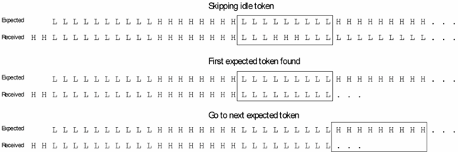

Skipping idle tokens
Tokens are bit sequences of fixed length. Payload tokens contain the user data; idle tokens are inserted between the payload tokens to bridge wait times and must be skipped for the evaluation.
The following token sizes are supported:
0, 8, 9, 10, 12, 16, 18, 20, 24, 28, 32, 34, 36, 40, 44, 48, 52, 56, 60, 64, 66
If the token size is > 0, the received data is processed after synchronization as follows:
The expected and received data are split up into expected and received tokens. Note that usually an expected token will not be an integer multiple of vectors. Each expected token is compared to a received token until a match is found. The step width equals the token size (contrast with initial synchronization, where the step width is one bit); that is, every received bit takes part in only one compare action. Every received token that does not match the current expected token will be counted as an idle token.
After a match has been found, the next expected token is compared to the remaining received data in the same way. The test will pass if a match is found for every expected token.
All received tokens for which no match is found are regarded as idle tokens and will be skipped. You can cause the protocol engine test to report how often certain idle tokens occur during the test. Up to 6 tokens can be defined for this purpose with TTCF (IDLE_TOKEN_i property, where 1 ≤ i ≤ 6). The number of occurrences will be reported by the TTDB? REMOVED_IDLE query. This feature is only available for token sizes > 0 and < 18.
If the token size is set to 0 (which is the default) then there exist no idle data, and every received value must match an expected value.
The number of consecutive idle tokens that can be skipped is restricted by the SUBSEQUENT_INITIAL_SYNC_LIMIT property (set with the TTCF command). The product of token size and number of consecutive skipped tokens must not exceed this limit.
Idle tokens and X-tokens
Further restrictions must be observed if tokens consisting exclusively of X (so-called X-tokens) are to be removed from the expected data before the expected data stream is compared to the received data stream. This feature, whose purpose is to determine approximately the number of idle tokens, is activated by setting the REMOVE_XTOKEN_MODE property to ON with the TTCF command. If this is done, the number of idle tokens may exceed the number of X-tokens at most by the maximum defined with the DEVIATION_LIMIT_DUT_BEFORE_ED property, and the number of removed X-tokens may exceed the number of idle tokens at most by the maximum defined with the DEVIATION_LIMIT_DUT_BEFORE_ED property. These two limits are also defined with TTCF.
Related Test Method APIs
getNumberOfRemovedIdleTokens() function of TRANSITION_TEST_STATUS
Example

This example continues the example of Startup latency and initial synchronization. The token length is 9. One idle token is skipped.
Functional changes
- Introduced in SmarTest 7.0.1